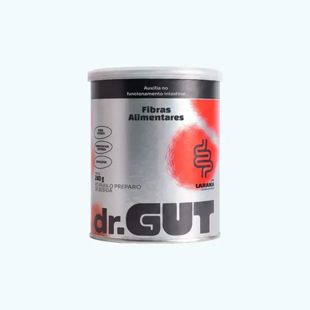
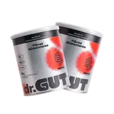
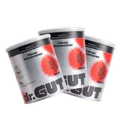
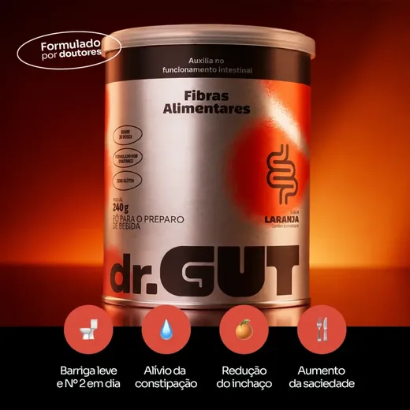

dr.GUT Fibras · Barriga leve e Nº 2 em dia
Sua barriga não estufa à noite por acaso.
Seu intestino está comendo metade do que precisa.
3 fibras prebióticas em dose de verdade, 5,8 g que alimentam suas bactérias boas e colocam o intestino no ritmo. Um copo de laranja, 30 segundos, todo dia.
Preço original: R$ 160,00 A partir de R$ 112,33 a lata
Formulado por doutores · Sem glúten · Zero cafeína
5,8 g
de fibra por dose, 23% do seu dia
3 fibras
que se completam, não uma só
4 nutrientes
em dose cheia, três deles a 100%
0 g
de açúcar adicionado, 14 kcal
Isso é você?
Você conhece bem esse ciclo
Acorda com a barriga normal. Ao longo do dia, ela vai estufando. À noite, a roupa aperta e você se sente pesada. No banheiro, só funciona se forçar, ou com laxante. E no dia seguinte, tudo de novo.
Você já tentou de tudo: mais água, mais salada, chá, aquele pó da farmácia. Melhora um dia. Depois volta. E você começa a achar que "é assim mesmo".
Não é assim mesmo. Você só está tratando o sintoma.
Como funciona
A gente alimenta. Não empurra.
Laxante força e o problema volta. A dr.GUT dá comida pras bactérias boas, e elas fazem o intestino funcionar sozinho.
-
Você toma
Um copo por dia, sabor laranja. 8 g em 200 ml de água gelada, dissolve em 30 segundos.
-
As bactérias comem
A fibra prebiótica é a comida delas. Bem alimentadas, elas se multiplicam e reequilibram a fermentação.
-
O intestino funciona
Sozinho. Sem forçar. As fibras alimentares auxiliam no funcionamento do intestino.
Fibra que alimenta, não que empurra.
A fórmula
3 fibras que se completam

-
1 Polidextrose
Dá volume e maciez ao trânsito intestinal. É a que faz o bolo andar sem esforço.
-
2 Inulina de chicória
A prebiótica clássica, o alimento preferido das bactérias boas. É ela que reequilibra a fermentação.
-
3 Goma guar parcialmente hidrolisada
Suave, dissolve sem virar gel. É a razão de você conseguir tomar todo dia, e não desistir na segunda semana.
E 4 micronutrientes em dose cheia
- Vitamina C 50 mg 100% VDAuxilia no funcionamento do sistema imune
- Zinco 11 mg 100% VDParticipa da divisão celular e da resposta imune
- Biotina 30 mcg 100% VDContribui para a manutenção da pele e do cabelo
- Selênio 30 mcg 50% VDAuxilia na proteção das células contra danos
Sem açúcar adicionado, sem cafeína e sem glúten. As três fibras somam 5,8 g por dose de 8 g, 23% do valor diário.
O buraco
Você não come metade da fibra que precisa
Não é falta de força de vontade. É aritmética, e quase todo mundo erra a mesma conta.
O que o brasileiro come
O que o corpo pede
Uma dose de dr.GUT
Uma dose cobre 5,8 g desse buraco. Não fecha sozinha, e a gente não vai dizer que fecha.
Comida vem primeiro, sempre. O dr.GUT existe pra garantir a base no dia corrido, aquele em que você pulou a salada e trocou o integral pelo refinado. Suplemento alimentar não substitui alimentação equilibrada.
Escolha seu kit
Quanto mais latas, menos por dose
1 lata
R$ 147,00 cada
R$ 4,90 por dose

2 latas
R$ 123,50 cada
R$ 4,12 por dose

3 latas
R$ 112,33 cada
R$ 3,74 por dose
No Pix: R$ 234,65 com 5% de desconto
Garantia incondicional de 30 dias. Não sentiu diferença, devolvemos 100%. Sem burocracia.
Até 3x sem juros. Frete grátis acima de R$ 247.
5,8
gramas de fibra por dose
30
doses em cada lata
30
dias de garantia incondicional
0
grama de açúcar adicionado
Compare
Fibra se mede em gramas
Contra o que você provavelmente usa hoje: um laxante, ou uma fibra de um ingrediente só.
| dr.GUT | Fibra de 1 ingrediente | Laxante | |
|---|---|---|---|
| Como age | Alimenta as bactérias boas | Alimenta, com uma fibra só | Força o intestino |
| Tipos de fibra | 3, com funções diferentes | 1 | Nenhuma |
| Fibra por dose | 5,8 g | Varia | 0 g |
| Micronutrientes | 4 em dose cheia | Nenhum | Nenhum |
| Dá pra usar todo dia | Sim, foi feito pra isso | Sim | Não é o indicado |
| Textura | Dissolve em 30 s, sem gosma | Muitas viram gel | n/a |
| Açúcar adicionado | 0 g | Varia | Varia |
| Preço por dose | R$ 4,90, ou R$ 3,74 no kit de 3 | Varia | Varia |
| Garantia | 30 dias, incondicional | Raro | Não |
Fibra de 1 ingrediente e laxante são categorias, não marcas. Valores que variam entre produtos aparecem como "varia" em vez de um número inventado.
O que esperar
Bem-estar não acontece da noite pro dia
Constância diária faz a diferença. A gente não promete prazo, porque corpo não é planilha.
Dias 1 a 3
Seu corpo recebe a fibra que sempre faltou.
Dias 4 a 14
Digestão no ritmo, barriga mais leve ao longo do dia.
Dias 14 a 30
Intestino no ritmo, roupa confortável de manhã à noite: seu novo normal.
Um aviso que a gente faz questão de dar antes. Nos primeiros dias, algumas pessoas sentem um pouco mais de gases. É a fibra começando a agir, e passa. Comece com meia dose e aumente aos poucos. E beba água: fibra sem água não funciona.
Quem já testou
Explica melhor que a gente
★★★★★
Gente, terceira semana e meu intestino descobriu que existe rotina kkkkk eu era do time "2x por semana com sorte" e achava normal. Hoje é TODO dia, de manhã, tipo reloginho mesmo. Nunca que eu ia imaginar que era só... fibra?
★★★★☆
O que mudou pra mim: chegar às 19h com a MESMA barriga das 8h. Eu vivia estufada no fim do dia e jurava que era "meu normal". Umas 2 semanas de uso constante e a calça parou de me apertar de noite. Chocada até agora.
★★★★★
Comprei desconfiada pq já joguei dinheiro fora com uns 3 pós verdes. A diferença: esse aqui eu CONTINUO tomando. Dissolve rápido, não tem aquela gosma, e o gosto de laranja é gostoso de verdade, não "gostinho aceitável". Já pedi o segundo pote.
★★★★★
Sou mãe de 2, meu autocuidado tem que caber em segundos ou não existe. Esse cabe: água gelada, mexo, pronto, saio tomando. É o único suplemento que eu não abandonei na segunda semana da vida. Só isso já valia as 5 estrelas.
★★★★☆
Tomo antes do almoço e a diferença na fome da tarde é nítida, aquele belisco das 16h sumiu. E preciso falar: o sabor é bom DEMAIS pra fibra, parece suco. Meu marido começou a roubar o meu, tive que assinar dois.
★★★★★
Eu inchava tanto que às 18h parecia grávida. Em 2 semanas isso acabou. Hoje minha barriga é leve o dia inteiro.
A loja exibe 5,0 com 1 avaliação verificada no widget de reviews. Os demais depoimentos são os publicados pela própria marca no material do produto.
30 dias de garantia incondicional
Se você não sentiu diferença no seu trânsito intestinal em 30 dias de uso contínuo, devolvemos 100% do seu dinheiro. Sem burocracia, sem questionamento.
Oi, eu sou o GUT
O guia do seu intestino
Toda marca tem um logo. Eu sou diferente: tenho voz, opinião e uma missão. Pego a ciência complicada e traduzo num papo simples, como um amigo que entende do assunto.
Eu defendo um ideal: ninguém deveria aceitar viver inchado, travado e cansado como se fosse "normal". Isso tem causa. E tem solução.
"Meu trabalho é simples: fazer você entender o seu corpo. Porque quando você entende, você cuida."
Ainda com dúvida?
Perguntas frequentes
Metade da fibra que eu preciso? De onde vem esse número?
Da Pesquisa de Orçamentos Familiares do IBGE, que a própria dr.GUT cita no blog: o brasileiro consome em média 15 g de fibra por dia, e a recomendação para adultos fica entre 25 g e 30 g. Isso é cerca de metade. Uma dose de dr.GUT entrega 5,8 g, ou 23% do valor diário. Cobre parte do buraco, não ele todo.
Já tentei fibra e não funcionou. Ou me deu gases.
As duas coisas acontecem, e a gente prefere avisar antes. Nos primeiros dias a fibra pode dar um pouco mais de gases: é sinal de que as bactérias boas voltaram a comer. Comece com meia dose, aumente aos poucos e beba água ao longo do dia. Sobre não funcionar: muita fibra do mercado vira gel e a pessoa desiste na segunda semana. A goma guar parcialmente hidrolisada foi escolhida justamente por dissolver sem engrossar.
É mais um "greens"? Já me decepcionei com um.
Não, e a diferença é número, não discurso: em vez de dezenas de ingredientes em pitadas, concentramos 3 fibras em 5,8 g reais e 4 nutrientes em dose cheia. Menos nomes no rótulo, mais gramas no que você sente.
Em quanto tempo vou sentir resultado?
A resposta que ninguém do mercado te dá: não prometemos prazo, porque corpo não é planilha. O que sabemos é que intestino responde a constância. Por isso o pote tem 30 doses e a garantia tem 30 dias. Teste um mês inteiro no seu corpo; não sentiu o intestino no ritmo, devolvemos tudo.
Qual é o gosto? E como eu tomo?
Sabor laranja de verdade, sem gosto de remédio. 1 scoop e meio (8 g) em 200 ml de água bem gelada, mexeu, pronto, dissolve em 30 segundos sem engrossar. Pode ser a qualquer hora. A maioria prefere de manhã; se o foco é saciedade, 20 a 30 minutos antes do almoço ou jantar.
Posso tomar todos os dias? Tem cafeína?
Todos os dias. O produto foi desenhado pra uso diário, e cada pote rende exatamente 30 doses. Zero cafeína: pode tomar inclusive à noite.
Substitui frutas, verduras e alimentação equilibrada?
Não. E desconfie de quem disser que sim. Comida vem primeiro, sempre. O dr.GUT cobre o buraco de quem faz a conta e não fecha no prato. Suplemento alimentar não substitui alimentação equilibrada.

Barriga leve e Nº 2 em dia
3 fibras prebióticas em dose de verdade. 30 segundos por dia. 30 dias de garantia.
Preço original: R$ 160,00 A partir de R$ 112,33 a lata
Quero a dose que se senteFormulado por doutores · Sem glúten · Zero cafeína · Até 3x sem juros